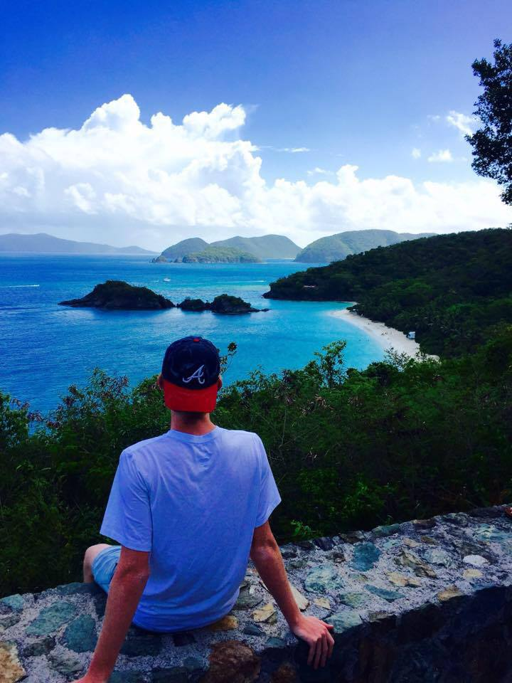

St. John is a place I go with my family either every summer or every other summer. It is a U.S. territory part of the Virgin Islands. This exotic place has some of the most beautiful beaches around the world. Some of my favorite beaches include:
Here is a picture of me at Trunk Bay, my all-time favorite beach. Trunk Bay is actually one of the most photographed beaches in the world. Some of the reasons that it is my favorite beach are its views, snorkeling, and overall feel of the place. Unfortunately, it is not like most beaches that are free to get into. You have to pay a couple bucks but it is all worth it. There is a gift shop, restaurant, bathrooms and showers. While snorkeling, you will see some of the most exotic wildlife. I have seen exotic fish, squid, sea turtles, lobsers, and much more here.
The beaches are not the only thing this island offers. St. John has very many local restaurants and bars that are really enjoyable. A lot of the local seafood places serve what they caught earlier that day. Down by the ferry docs is where everyone goes at night to drink, shop, and hang out. One of my favorite bars down there is Woody's. It also happens to be one of Kenny Chesney's favorite places to go when he is on the island! Whenever I go down to the docs I look around at all of the vendors and shops. People down there make and sell all types of items using seashells, coconuts, along with other materials they can find around the island.
My Daily Schedule
| Morning | Afternoon | Evening | Night |
|---|---|---|---|
| Wake up | Enjoy the beach | Hit the town | Relax and sleep |
Above is my normal daily schedule when I am in St. John!
If you are interested in finding out more information about St. John you can click THIS LINK